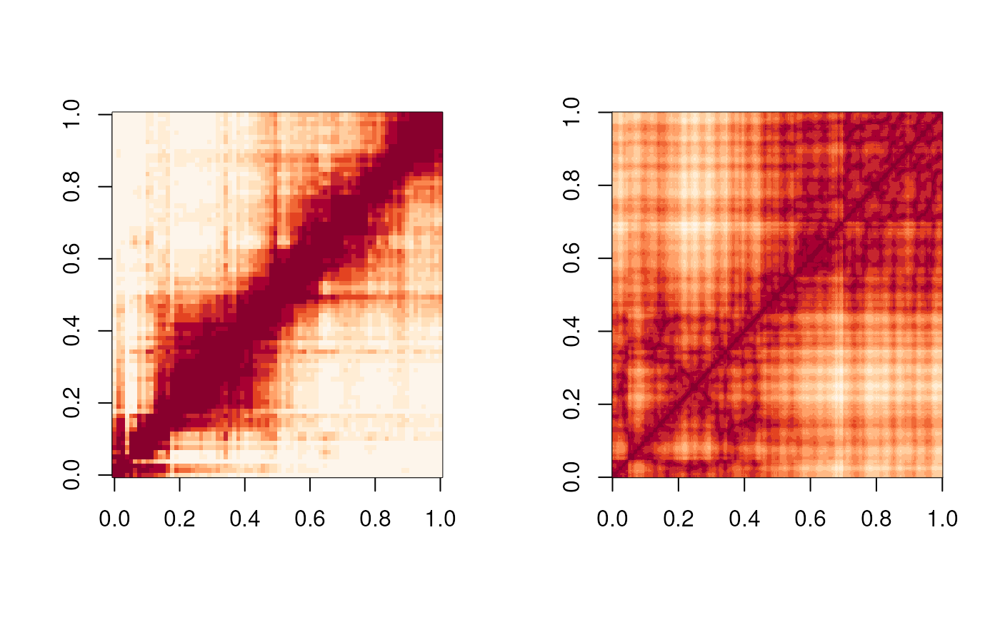

The Figure 6 is the showcase for geomeTriD package to
validate the prediction of 3D structures.
library(geomeTriD)
library(geomeTriD.documentation)
library(GenomicRanges)
library(GenomeInfoDb)
library(trackViewer)
library(InteractionSet)
# original interaction map vs. spatialDistanceHeatmap
gr <- GRanges('chrX:1-20000000')
## load FLAMINGO results
FLAMINGO_chrX_5kb <- importFLAMINGO('https://github.com/wangjr03/FLAMINGO/raw/refs/heads/main/predictions/GM12878/chrX_5kb.txt')[[1]]
sdm_FLAMINGO <- spatialDistanceMatrix(subsetByOverlaps(FLAMINGO_chrX_5kb, gr), fill_NA = TRUE)
## load SuperRec results
extdata <- system.file('extdata', 'GSE63525', package = 'geomeTriD.documentation')
superRec_chrX_5kb <- importSuperRec(file.path(extdata, 'combined_30.chrX.SuperRec.txt.gz'),
## this file is not the real input file SuperRec
## the file is reduced size to construct the xyz object for this doc.
file.path(extdata, 'combined_30.chrX.SuperRec.input.subset.gz'),
binsize = 5000, chr='chrX')[[1]]
sdm_superRec<- spatialDistanceMatrix(subsetByOverlaps(superRec_chrX_5kb, gr), fill_NA = TRUE)
## load hic signal matrix
hic_sig <- importGInteractions('https://ftp.ncbi.nlm.nih.gov/geo/series/GSE63nnn/GSE63525/suppl/GSE63525%5FGM12878%5Fdilution%5Fcombined%5F30.hic',
format = 'hic', ranges = GRanges('X:1-20000000'),
resolution = 250000, out='GInteractions')
seqlevelsStyle(regions(hic_sig)) <- 'UCSC'
anchors <- anchorIds(hic_sig)
rg <- range(regions(hic_sig))
w <- unique(width(regions(hic_sig)))
gr <- slidingWindows(rg, width = w, step = w)[[1]]
df <- data.frame(i=anchors[[1]], j=anchors[[2]], score=log10(mcols(hic_sig)$score))
m <- xtabs(score ~ i + j, data = df)
m <- m+t(m)
## function to increase the contrasts
sigmoid_transform <- function(mat, center_value, steepness){
1 / (1 + exp(-steepness * (m - center_value)))
}
mat_sigmoid <- sigmoid_transform(m, center_value = mean(m, na.rm=TRUE), steepness = 5)
par("mfcol"=c(1, 2))
image(mat_sigmoid, useRaster=TRUE, col = rev(hcl.colors(n=12, "OrRd")))
image(sdm_FLAMINGO, useRaster = TRUE, col = hcl.colors(n=12, "OrRd"))
## check Distance-Contact correlation
safe_scale <- function(x) {
rng <- range(x, na.rm = TRUE)
if (diff(rng) == 0) return(x)
(x - rng[1]) / diff(rng)
}
sdm_80 <- function(x){
sdm_80 <- rowsum(x, rep(seq.int(80), each=50)[seq.int(nrow(x))])
sdm_80 <- rowsum(t(sdm_80), rep(seq.int(80), each=50)[seq.int(ncol(sdm_80))])
sdm_80 <- t(sdm_80)
sdm_scaled_safe <- safe_scale(sdm_80)
}
mat_scaled_safe <- safe_scale(m)
sdm_80_FLAMINGO <- sdm_80(sdm_FLAMINGO)
sdm_80_superRec <- sdm_80(sdm_superRec)
(cor_FLAMINGO <- cor.test(as.numeric(mat_scaled_safe),
as.numeric(1/sdm_80_FLAMINGO), method = 'spearman'))## Warning in cor.test.default(as.numeric(mat_scaled_safe),
## as.numeric(1/sdm_80_FLAMINGO), : Cannot compute exact p-value with ties##
## Spearman's rank correlation rho
##
## data: as.numeric(mat_scaled_safe) and as.numeric(1/sdm_80_FLAMINGO)
## S = 9.739e+09, p-value < 2.2e-16
## alternative hypothesis: true rho is not equal to 0
## sample estimates:
## rho
## 0.7770931
(cor_superRec <- cor.test(as.numeric(mat_scaled_safe),
as.numeric(1/sdm_80_superRec), method = 'spearman'))## Warning in cor.test.default(as.numeric(mat_scaled_safe),
## as.numeric(1/sdm_80_superRec), : Cannot compute exact p-value with ties##
## Spearman's rank correlation rho
##
## data: as.numeric(mat_scaled_safe) and as.numeric(1/sdm_80_superRec)
## S = 4.9934e+10, p-value < 2.2e-16
## alternative hypothesis: true rho is not equal to 0
## sample estimates:
## rho
## -0.1428887
## check Reconstruction Error
re <- function(d_model, hic_sig){
sum(hic_sig*(d_model - 1/hic_sig)^2, na.rm = TRUE)
}
re(sdm_80_FLAMINGO, mat_scaled_safe)## [1] 42149.23
re(sdm_80_superRec, mat_scaled_safe)## [1] 39530.13## R version 4.5.1 (2025-06-13)
## Platform: x86_64-pc-linux-gnu
## Running under: Ubuntu 24.04.2 LTS
##
## Matrix products: default
## BLAS: /usr/lib/x86_64-linux-gnu/openblas-pthread/libblas.so.3
## LAPACK: /usr/lib/x86_64-linux-gnu/openblas-pthread/libopenblasp-r0.3.26.so; LAPACK version 3.12.0
##
## locale:
## [1] LC_CTYPE=en_US.UTF-8 LC_NUMERIC=C
## [3] LC_TIME=en_US.UTF-8 LC_COLLATE=en_US.UTF-8
## [5] LC_MONETARY=en_US.UTF-8 LC_MESSAGES=en_US.UTF-8
## [7] LC_PAPER=en_US.UTF-8 LC_NAME=C
## [9] LC_ADDRESS=C LC_TELEPHONE=C
## [11] LC_MEASUREMENT=en_US.UTF-8 LC_IDENTIFICATION=C
##
## time zone: Etc/UTC
## tzcode source: system (glibc)
##
## attached base packages:
## [1] grid stats4 stats graphics grDevices utils datasets
## [8] methods base
##
## other attached packages:
## [1] InteractionSet_1.37.0 SummarizedExperiment_1.39.1
## [3] Biobase_2.69.0 MatrixGenerics_1.21.0
## [5] matrixStats_1.5.0 trackViewer_1.45.1
## [7] GenomeInfoDb_1.45.7 GenomicRanges_1.61.1
## [9] Seqinfo_0.99.1 IRanges_2.43.0
## [11] S4Vectors_0.47.0 BiocGenerics_0.55.0
## [13] generics_0.1.4 geomeTriD.documentation_0.0.5
## [15] geomeTriD_1.3.15
##
## loaded via a namespace (and not attached):
## [1] strawr_0.0.92 RColorBrewer_1.1-3 rstudioapi_0.17.1
## [4] jsonlite_2.0.0 magrittr_2.0.3 GenomicFeatures_1.61.4
## [7] farver_2.1.2 rmarkdown_2.29 fs_1.6.6
## [10] BiocIO_1.19.0 ragg_1.4.0 vctrs_0.6.5
## [13] memoise_2.0.1 Rsamtools_2.25.1 RCurl_1.98-1.17
## [16] base64enc_0.1-3 htmltools_0.5.8.1 S4Arrays_1.9.1
## [19] progress_1.2.3 plotrix_3.8-4 curl_6.4.0
## [22] Rhdf5lib_1.31.0 rhdf5_2.53.1 SparseArray_1.9.0
## [25] Formula_1.2-5 sass_0.4.10 parallelly_1.45.0
## [28] bslib_0.9.0 htmlwidgets_1.6.4 desc_1.4.3
## [31] Gviz_1.53.1 httr2_1.1.2 cachem_1.1.0
## [34] GenomicAlignments_1.45.1 igraph_2.1.4 lifecycle_1.0.4
## [37] pkgconfig_2.0.3 Matrix_1.7-3 R6_2.6.1
## [40] fastmap_1.2.0 future_1.58.0 aricode_1.0.3
## [43] clue_0.3-66 digest_0.6.37 colorspace_2.1-1
## [46] AnnotationDbi_1.71.0 textshaping_1.0.1 Hmisc_5.2-3
## [49] RSQLite_2.4.1 filelock_1.0.3 progressr_0.15.1
## [52] httr_1.4.7 abind_1.4-8 compiler_4.5.1
## [55] bit64_4.6.0-1 backports_1.5.0 htmlTable_2.4.3
## [58] BiocParallel_1.43.4 DBI_1.2.3 R.utils_2.13.0
## [61] biomaRt_2.65.0 MASS_7.3-65 rappdirs_0.3.3
## [64] DelayedArray_0.35.2 rjson_0.2.23 tools_4.5.1
## [67] foreign_0.8-90 future.apply_1.20.0 nnet_7.3-20
## [70] R.oo_1.27.1 glue_1.8.0 restfulr_0.0.16
## [73] dbscan_1.2.2 rhdf5filters_1.21.0 checkmate_2.3.2
## [76] cluster_2.1.8.1 gtable_0.3.6 BSgenome_1.77.1
## [79] R.methodsS3_1.8.2 ensembldb_2.33.1 data.table_1.17.6
## [82] hms_1.1.3 xml2_1.3.8 XVector_0.49.0
## [85] RANN_2.6.2 pillar_1.10.2 stringr_1.5.1
## [88] dplyr_1.1.4 BiocFileCache_2.99.5 lattice_0.22-7
## [91] deldir_2.0-4 rtracklayer_1.69.1 bit_4.6.0
## [94] biovizBase_1.57.1 tidyselect_1.2.1 Biostrings_2.77.2
## [97] knitr_1.50 gridExtra_2.3 ProtGenerics_1.41.0
## [100] xfun_0.52 stringi_1.8.7 UCSC.utils_1.5.0
## [103] lazyeval_0.2.2 yaml_2.3.10 evaluate_1.0.4
## [106] codetools_0.2-20 interp_1.1-6 tibble_3.3.0
## [109] cli_3.6.5 rpart_4.1.24 systemfonts_1.2.3
## [112] jquerylib_0.1.4 dichromat_2.0-0.1 Rcpp_1.0.14
## [115] globals_0.18.0 grImport_0.9-7 dbplyr_2.5.0
## [118] png_0.1-8 XML_3.99-0.18 parallel_4.5.1
## [121] pkgdown_2.1.3 rgl_1.3.24 ggplot2_3.5.2
## [124] blob_1.2.4 prettyunits_1.2.0 jpeg_0.1-11
## [127] latticeExtra_0.6-30 AnnotationFilter_1.33.0 bitops_1.0-9
## [130] txdbmaker_1.5.6 listenv_0.9.1 VariantAnnotation_1.55.1
## [133] scales_1.4.0 crayon_1.5.3 rlang_1.1.6
## [136] KEGGREST_1.49.1